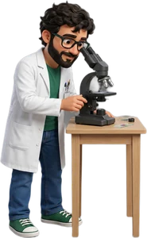

Scegli Animali, Piante o Funghi, poi tocca una struttura nel modello o nell'elenco. Prova anche la modalità console, in alto a destra nella scena.
Tocca una struttura
Trascina per ruotare, pizzica o usa la rotella per ingrandire. Tocca di nuovo la stessa struttura per deselezionarla.
Soluzione isotonica
poco solutoipotonicaisotonicaipertonicamolto soluto
cristalli viola = soluto; più cristalli e sfondo più viola = più solutogocce azzurre = acqua. Se attraversano il contorno più in un verso che nell'altro, l'acqua si sposta in quel versozone rosse, oltre questi valori la cellula animale subisce danni irreversibili (lisi a sinistra, crenatura a destra)
Animali
Piante
Trascina sulla vasca per ruotarla (animale e pianta ruotano insieme); pizzica o usa la rotella per ingrandire.

Sposta il cursore o tocca Ipotonica e Ipertonica, poi guarda da che parte vanno le gocce d'acqua. Prova anche la modalità console, in alto a destra nella vasca.
L'acqua si muove dove c'è meno acqua libera, cioè dove c'è più soluto.
Tre modelli 3D da osservare, per cellule animali, piante e funghi, con gli organuli rappresentati come nei libri di biologia, e la cellula al lavoro con l'mRNA, le vescicole, la respirazione cellulare e la fotosintesi. Poi l'osmosi, con la cellula animale, il globulo rosso e la cellula vegetale in soluzione ipotonica, isotonica o ipertonica, dalla lisi e dalla crenatura fino alla plasmolisi. Come si dividono le cellule, e con loro il DNA, lo vedi in La divisione cellulare.